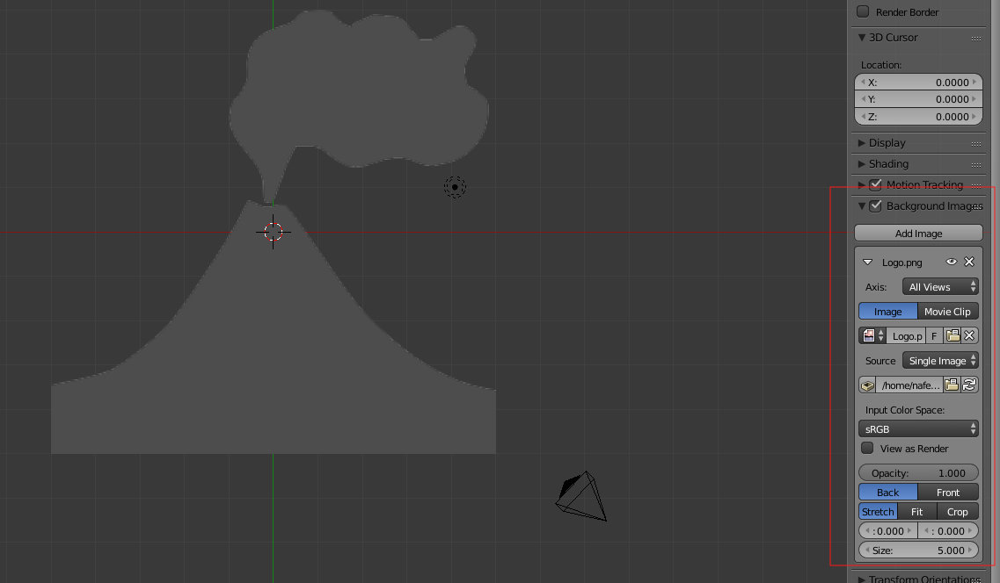
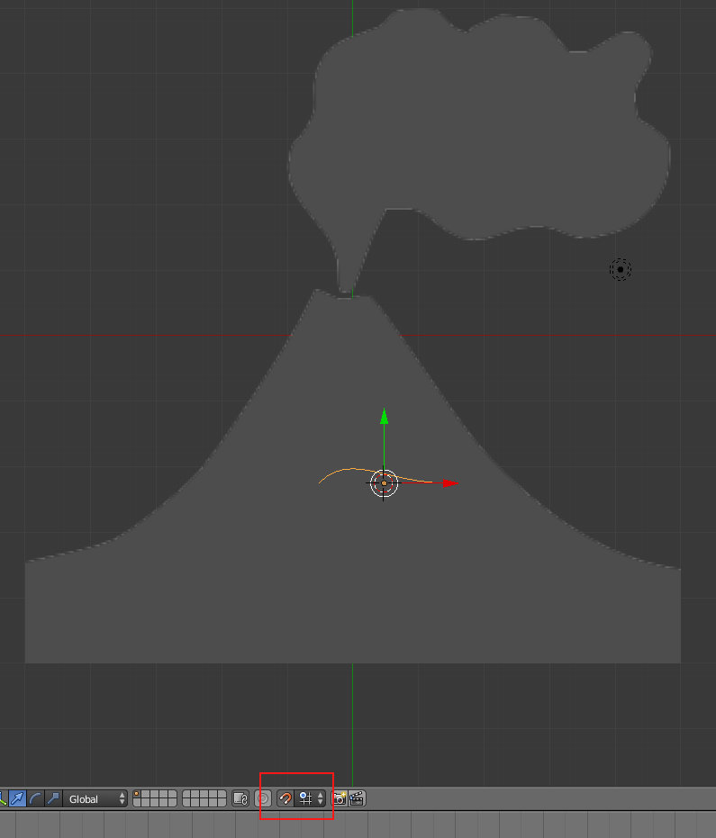
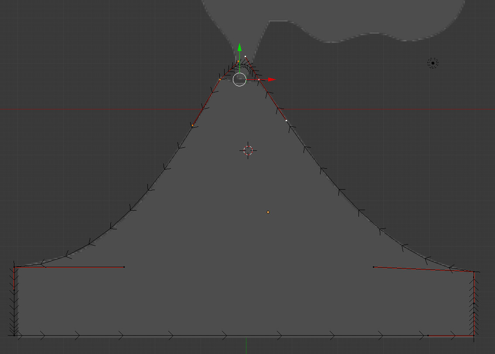
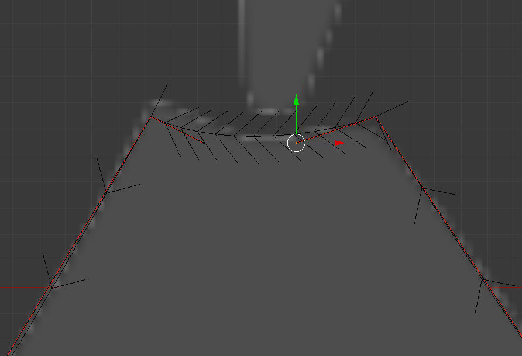
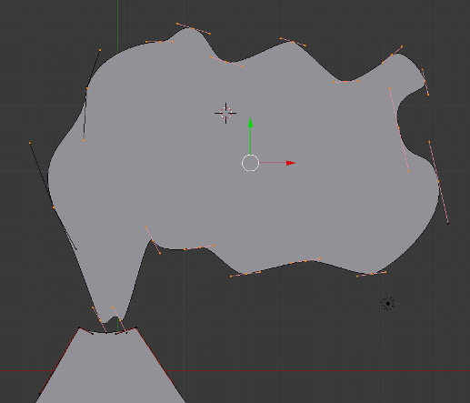
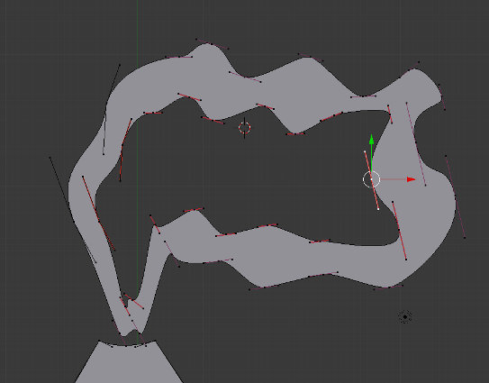
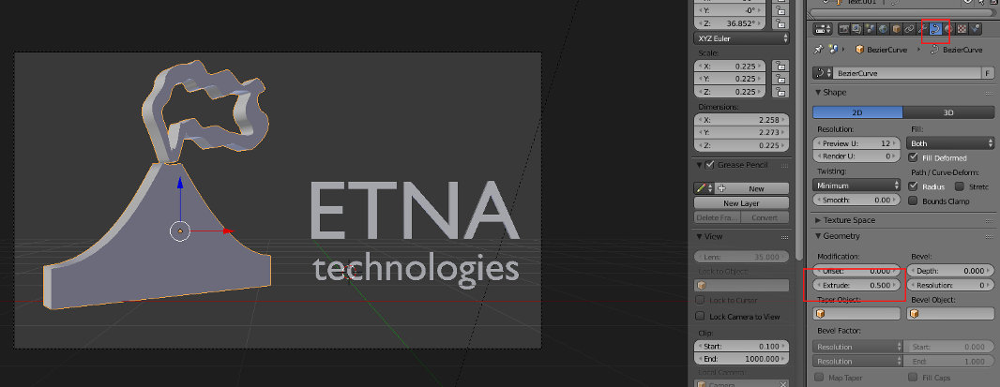
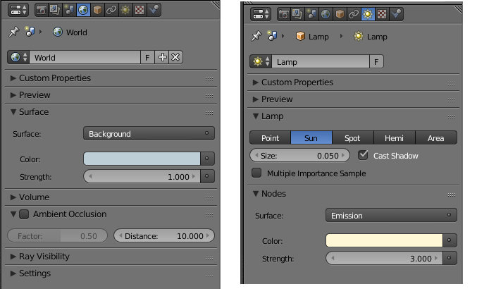

1. Neste exercício vamos utilizar a imagem apresentada abaixo e disponivel em OpenClipart.
2. Introduza a imagem que irá servir de guia no fundo da área de trabalho.
3. Ative o Snap during Transform para controlar melhor a modelação e insira uma Curve > Bézier.
4. Manipule a Bézier até obter uma forma aproximada à do vulcão. Em Edit Mode, utilize o E para criar novos pontos (extrusion) e, no final, para fechar a forma, selecione os dois pontos que pretende ligar e pressione F (Fill).
Em Edit Mode, pode utilizar o atalho V para escolher modo de controlo dos pontos (livre, alinhado, vector, etc).
Se selecionar dois pontos e clicar em S + X + 0, os dois pontos selecionados ficarão alinhados no eixo X. A mesma técnica pode ser utilizada para alinhar nos restantes dois eixos ou em mais pontos (pode alinhar 5 pontos no mesmo eixo, por exemplo).
 5. Depois de concluir o vulcão, posicione o cursor 3D em cima nuvem e adicione (Shift+A) uma nova Bézier. Esta última Bézier faz parte do mesmo objeto mas não está diretamente ligada ao vulcão. Desenhe uma nuvem aproximada.
Depois, ative o modo 2D para preencher a forma que desenhou.
6. Selecione apenas todos os pontos que desenham a nuvem. Duplique os mesmos (Shift+D) e redimensione (S) para criar uma forma similar à segunda imagem abaixo.
 7. Selecione o objeto do vulcão e insira 0.5 no valor de Extrude da curva para criar espessura na forma. Depois posicione a forma de forma similar à imagem abaixo (ou a seu gosto) e junte o texto que considerar adequado.
8. Atribua materiais e construa um sistema de iluminação. Na imagem abaixo, foi utilizada a luz do Background e uma luz do tipo Sun.
